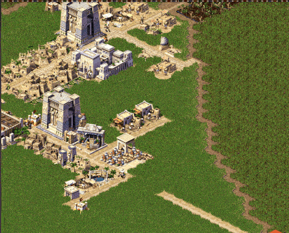

Statue Preview and Rotation Move to Script

Statues were one of the last building types whose placement preview still lived in C++. This pass finishes the migration: the ghost that follows your cursor — its sprite, its variant, and which way it faces — is now resolved entirely in script. Along the way two long-standing annoyances got fixed: pressing R now actually rotates a statue before you place it, and that works even when the global "rotate buildings manually" option is off.
The Rotation Bug
Statue sprites are stored as a base image plus four orientation frames. The preview resolved a variant but always handed back the base frame, ignoring orientation completely — so the R hotkey changed an internal value that never reached the picture. The ghost just sat there facing the same way no matter how many times you pressed it.
The fix is to add the orientation offset when resolving the image, and to derive the placement orientation from the planner's global_rotation rather than a stale local value:
int building_statue::get_image(e_building_type type, int orientation, int variant, ...) {
variant %= size;
image_desc imdesc = statue_params.variants[variant];
return (imdesc + orientation).tid(); // was: imdesc.tid()
}Rotate Even When Auto-Rotate Is Off
The hotkey was also gated behind the global gameui_rotate_manually feature, so with that option disabled R did nothing for anything. But some buildings — statues especially — want manual rotation regardless. A new per-building allow_rotate flag opts them in:
flags {
is_statue: true
is_beautification: true
allow_rotate: true
}The hotkey handler now checks the building's own config before bailing out:
rotate_by_hotkey: function() {
var cfg = get_building_config_by_id(city_planner.build_type)
var allow_rotate = cfg && cfg.flags && cfg.flags.allow_rotate
if (!game_features.gameui_rotate_manually && !allow_rotate) {
return
}
...
}Preview Logic Leaves C++
With rotation working, the whole statue preview pipeline moved out of building_statue.cpp and into script. The engine side now just exposes the entity-system hooks — setup_preview_graphics, setup_building_variant, next_building_variant, update_relative_orientation, update_building_variant — plus one new binding, __city_planner_set_tiles_building, so script can stamp the ghost's image and size onto the planner directly.
The shared statue.js shrank to two helpers — image resolution and variant cycling — that every statue size reuses:
function statue_get_image(variants, orientation, variant) {
var size = variants.length
if (!size) { return 0 }
while (orientation < 0) { orientation += 4 }
while (orientation > 3) { orientation -= 4 }
variant = ((variant % size) + size) % size
var desc = variants[variant]
var img = get_image({ pack: desc.pack, id: desc.id, offset: desc.offset + orientation })
return img ? img.tid : 0
}One File per Statue Size
The monolithic block that defined small, medium, and large statues together was split into statue_small.js, statue_medium.js, and statue_large.js, each pulled in from buildings.js. Every file now carries its own data and its preview behaviour as [es=...] handlers right next to it:
[es=(building_small_statue, setup_preview_graphics)]
function building_small_statue_setup_preview_graphics(ev) {
var img = statue_get_image(building_small_statue.variants,
city_planner.relative_orientation,
city_planner.building_variant)
__city_planner_set_tiles_building(img, building_small_statue.building_size)
}
[es=(building_small_statue, setup_building_variant)]
function building_small_statue_setup_building_variant(ev) {
city_planner.custom_building_variant =
Math.floor(Math.random() * building_small_statue.variants.length)
}
[es=(building_small_statue, update_relative_orientation)]
function building_small_statue_update_relative_orientation(ev) {
city_planner.relative_orientation = (city_planner.global_rotation + 1) % 4
}Why This Matters
A statue is now fully described in one script file: its variants, its cost and desirability, the random variant rolled when you pick it up, how it cycles, and how it rotates under the cursor. Adding a new statue — or giving any other building a hand-rotatable preview — no longer touches C++ or needs a recompile: drop in a file, set allow_rotate, press F5. It's the same one-file-at-a-time pattern the overlays and building windows have been following.